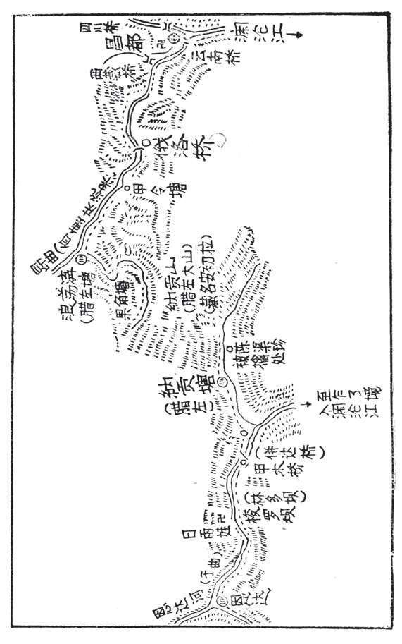
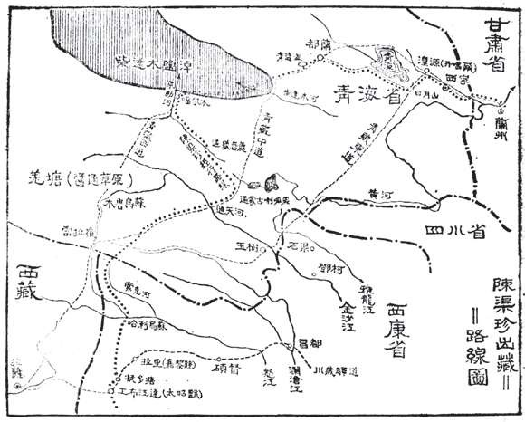

西藏桥与俄洛桥
文字：用户所引校注：俄洛桥（番名西藏桥）。
书图：照片二把近昌都的西藏桥、较西的俄洛桥分别标出。
保留图文称名矛盾；地图可使用俄洛村地区参照，但不把两座旧桥未经证实合并，更不把任一现代桥认定为旧桥。
陈渠珍由昌都出发侦探，在纳贡塘附近被俘，后被带到恩达，与堪布交涉后获释，返抵昌都。下面把十一处主链地名与正文分日、原述里数并列，避免把地名订正误当作已经定位的古道。
顺序示意，无比例尺、无经纬度。原述“里”保留原样，不换算 km；图上的地名顺序不能直接证明现代点位。
转正后在右端，靠澜沧江。图中另有寺院／聚落符号；不据此指认具体建筑。
陈渠珍偕通事张应明由昌都出发，薄暮到俄洛桥边军哨营，留宿一夜。
正文明确叙述节点和留宿；日序编号为整理推算。日暮到俄洛桥后未留宿，继续夜行，正文记晚十二时返抵昌都。
正文明确复经俄洛桥并返抵昌都。经俄洛桥后继续夜行返抵昌都。可同时列离恩达与抵昌都时刻，不把二者时差当作无停歇行军实测。
| 来源 | 段落 | 原述 | 限制 |
|---|---|---|---|
| 校注十一 | 浪荡沟 → 昌都 | 六十里 | 浪荡沟经俄洛桥至昌都的合计，不把桥前后各赋六十里。 |
| 正文 | 昌都 → 俄洛桥 | 三十里 | 该句位于出昌都及群鸦事件之后，按本段行程通常理解为昌都至俄洛桥；具体量程起算点未另明，不与前句三里机械相加。 |
无经纬度。此条目的顺序／别名不能直接证明现代点位。
回到节点目录 ↑图内单独标在近昌都的昂曲河口附近，与更西的俄洛桥不是同一个图上标位。
仅据书图补充此名；正文未逐站叙述此处，不能为它增造停驻日期、经过事件或坐标。
没有可独立分配到此点的原述里数；不按图距或相邻段分摊。
无经纬度。此条目的顺序／别名不能直接证明现代点位。
回到节点目录 ↑在西藏桥以西、甲令塘以东的昂曲谷地；不可因为校注正文称番名西藏桥就直接抹去两标位差异。
陈渠珍偕通事张应明由昌都出发，薄暮到俄洛桥边军哨营，留宿一夜。
正文明确叙述节点和留宿；日序编号为整理推算。次晨从俄洛桥出发到原书腊左塘，见塘兵准备撤走；校注对应浪荡沟。
正文明确经过；今旧名按校注订正。日暮到俄洛桥后未留宿，继续夜行，正文记晚十二时返抵昌都。
正文明确复经俄洛桥并返抵昌都。俄洛桥哨营款待后留宿，随后明确次晨再行。
| 来源 | 段落 | 原述 | 限制 |
|---|---|---|---|
| 校注十一 | 浪荡沟 → 昌都 | 六十里 | 浪荡沟经俄洛桥至昌都的合计，不把桥前后各赋六十里。 |
| 正文 | 昌都 → 俄洛桥 | 三十里 | 该句位于出昌都及群鸦事件之后，按本段行程通常理解为昌都至俄洛桥；具体量程起算点未另明，不与前句三里机械相加。 |
| 正文 | 俄洛桥 → 浪荡沟 | 三十里 | 次晨行至原书腊左塘，按校注名为浪荡沟。 |
无经纬度。此条目的顺序／别名不能直接证明现代点位。
回到节点目录 ↑可读作甲令塘；令字仍需更清晰原页复核。图上有独立圆点，校注十一所引文字未逐项列出此名。现代对应未据本图确定。
仅据书图补充此名；正文未逐站叙述此处，不能为它增造停驻日期、经过事件或坐标。
没有可独立分配到此点的原述里数；不按图距或相邻段分摊。
无经纬度。此条目的顺序／别名不能直接证明现代点位。
回到节点目录 ↑图上在昂曲转折及另一路谷地入口附近；校注说设塘兵。不能与纳贡塘／腊左合成一个点。
次晨从俄洛桥出发到原书腊左塘，见塘兵准备撤走；校注对应浪荡沟。
正文明确经过；今旧名按校注订正。翻越原书腊左山后下至平地，再沿小溪到原书腊左；薄暮后在民房投宿。
正文明确经过；纳贡山／纳贡塘名称按校注和对应上下文整理。上原书腊左山、下山至腊左塘；塘房已空，在此遣返护送藏兵。
正文明确复经山段和腊左塘；今旧名按校注订正。日暮到俄洛桥后未留宿，继续夜行，正文记晚十二时返抵昌都。
正文明确复经俄洛桥并返抵昌都。| 来源 | 段落 | 原述 | 限制 |
|---|---|---|---|
| 校注十一 | 纳贡塘 → 浪荡沟 | 约四十里 | 经翻山的整体段落，不是纳贡山的垂直高差。 |
| 校注十一 | 浪荡沟 → 昌都 | 六十里 | 浪荡沟经俄洛桥至昌都的合计，不把桥前后各赋六十里。 |
| 正文 | 俄洛桥 → 浪荡沟 | 三十里 | 次晨行至原书腊左塘，按校注名为浪荡沟。 |
| 正文 | 浪荡沟 → 纳贡山山巅（具体山口未定位） | 十余里 | 原文以山高十余里描述登山过程；不当作已测垂直高差或现代道路长度。 |
无经纬度。此条目的顺序／别名不能直接证明现代点位。
回到节点目录 ↑图示两条谷地之间的山脊／越岭段。括注为腊左大山、藏名安初拉；不是现代地形确址或已经确定的通行山口。
翻越原书腊左山后下至平地，再沿小溪到原书腊左；薄暮后在民房投宿。
正文明确经过；纳贡山／纳贡塘名称按校注和对应上下文整理。上原书腊左山、下山至腊左塘；塘房已空，在此遣返护送藏兵。
正文明确复经山段和腊左塘；今旧名按校注订正。| 来源 | 段落 | 原述 | 限制 |
|---|---|---|---|
| 校注十一 | 纳贡塘 → 浪荡沟 | 约四十里 | 经翻山的整体段落，不是纳贡山的垂直高差。 |
无经纬度。此条目的顺序／别名不能直接证明现代点位。
回到节点目录 ↑在纳贡山另一侧、恩达河谷一带。图示陈渠珍被擒处在其右侧近山麓，见单独事件条目。
翻越原书腊左山后下至平地，再沿小溪到原书腊左；薄暮后在民房投宿。
正文明确经过；纳贡山／纳贡塘名称按校注和对应上下文整理。投宿后遭藏兵搜捕、受伤并被俘；具体民房、藏身处及受袭点无法定位。
正文明确事件；校注将原书腊左对应纳贡塘。被俘后被系于马背带走，经过原书并达桥，再沿河至原书林多坝，夜半受讯，后获松绑并在室内休息。
正文明确经过桥及到达坝地；今旧名按校注订正。归途中再次经过原书腊左，即校注所订纳贡塘。
正文明确再次经过纳贡塘；恩达至此之间未逐名重述甲木桥或梭罗坝。上原书腊左山、下山至腊左塘；塘房已空，在此遣返护送藏兵。
正文明确复经山段和腊左塘；今旧名按校注订正。| 来源 | 段落 | 原述 | 限制 |
|---|---|---|---|
| 校注十一 | 甲木桥 → 纳贡塘 | 十里 | 校注依次向东的下一段。 |
| 校注十一 | 纳贡塘 → 浪荡沟 | 约四十里 | 经翻山的整体段落，不是纳贡山的垂直高差。 |
| 正文 | 下山平地（未定位） → 纳贡塘 | 二三里 | 沿小溪抵原书腊左。 |
| 正文 | 纳贡塘 → 甲木桥 | 十余里 | 被俘后月夜押送段，非自行侦探段。 |
无经纬度。此条目的顺序／别名不能直接证明现代点位。
回到节点目录 ↑主名甲木桥清楚。照片括注首字更像伴，但校注所引作并；保留版本／识读差异，不据照片单独改定别名。
被俘后被系于马背带走，经过原书并达桥，再沿河至原书林多坝，夜半受讯，后获松绑并在室内休息。
正文明确经过桥及到达坝地；今旧名按校注订正。| 来源 | 段落 | 原述 | 限制 |
|---|---|---|---|
| 校注十一 | 梭罗坝 → 甲木桥 | 数里 | 与正文被俘后该段十余里的记述有差异，分别保留。 |
| 校注十一 | 甲木桥 → 纳贡塘 | 十里 | 校注依次向东的下一段。 |
| 正文 | 纳贡塘 → 甲木桥 | 十余里 | 被俘后月夜押送段，非自行侦探段。 |
| 正文 | 甲木桥 → 梭罗坝 | 十余里 | 过桥后沿河到原书林多坝；与校注的数里分别保留，不取平均。 |
无经纬度。此条目的顺序／别名不能直接证明现代点位。
回到节点目录 ↑位于恩达与甲木桥之间；代表点未据本图赋坐标。
被俘后被系于马背带走，经过原书并达桥，再沿河至原书林多坝，夜半受讯，后获松绑并在室内休息。
正文明确经过桥及到达坝地；今旧名按校注订正。天明后由藏兵扶上马带往恩达，正文记午前十时已到；恩达汛官迎接并导至堪布大营。
正文明确实际到达恩达，不能画成只到纳贡塘或纳贡山折返。被俘后夜半到原书林多坝，在此受讯、松绑并短暂休息。
| 来源 | 段落 | 原述 | 限制 |
|---|---|---|---|
| 校注十一 | 恩达 → 梭罗坝 | 十余里 | 校注从恩达沿河向东叙述。 |
| 校注十一 | 梭罗坝 → 甲木桥 | 数里 | 与正文被俘后该段十余里的记述有差异，分别保留。 |
| 正文 | 甲木桥 → 梭罗坝 | 十余里 | 过桥后沿河到原书林多坝；与校注的数里分别保留，不取平均。 |
| 正文 | 梭罗坝 → 恩达 | 二十余里 | 被俘后翌晨赴恩达段；与校注相应十余里有差异。 |
无经纬度。此条目的顺序／别名不能直接证明现代点位。
回到节点目录 ↑图上位于梭罗坝与恩达之间，可读作日雨娃；未查证现代地名，保留识读待核。
仅据书图补充此名；正文未逐站叙述此处，不能为它增造停驻日期、经过事件或坐标。
没有可独立分配到此点的原述里数；不按图距或相邻段分摊。
无经纬度。此条目的顺序／别名不能直接证明现代点位。
回到节点目录 ↑转正后在图左端的河谷汇合处一带。校注说位于瓦合大山东岸；具体汛署及登珠营地未据村域参照点确定。
天明后由藏兵扶上马带往恩达，正文记午前十时已到；恩达汛官迎接并导至堪布大营。
正文明确实际到达恩达，不能画成只到纳贡塘或纳贡山折返。与堪布交涉后获准返昌都，获赠物品、马匹并有四名藏兵护送；收拾启程时为午后一时。
正文明确地点和时刻；大营建筑与营址未定。归途中再次经过原书腊左，即校注所订纳贡塘。
正文明确再次经过纳贡塘；恩达至此之间未逐名重述甲木桥或梭罗坝。该时刻为上午到恩达的叙述，不是耗时十小时。
收拾离开恩达返昌都时的叙述时刻。
| 来源 | 段落 | 原述 | 限制 |
|---|---|---|---|
| 校注十一 | 恩达 → 梭罗坝 | 十余里 | 校注从恩达沿河向东叙述。 |
| 正文 | 梭罗坝 → 恩达 | 二十余里 | 被俘后翌晨赴恩达段；与校注相应十余里有差异。 |
无经纬度。此条目的顺序／别名不能直接证明现代点位。
回到节点目录 ↑首晚俄洛桥留宿，第二夜被俘后至梭罗坝，第三日上午到恩达并在同日午夜返抵昌都。约3日、2夜来自这些相对分日，不能与堪布承诺的“三日撤兵”、校注十“卡工以西野宿三日”混为一项。
依据出发当日留宿俄洛桥、次晨继续前进及被俘、又次晨赴恩达且同日午夜返昌都的相对分日整理；原书没有自计全程三日，不换算公历日期。
俄洛桥哨营款待后留宿，随后明确次晨再行。
被俘后夜半到原书林多坝，在此受讯、松绑并短暂休息。
该时刻为上午到恩达的叙述，不是耗时十小时。
收拾离开恩达返昌都时的叙述时刻。
经俄洛桥后继续夜行返抵昌都。可同时列离恩达与抵昌都时刻，不把二者时差当作无停歇行军实测。
堪布许诺的撤兵期限；不能当作陈探险三日或任一相邻站行程时间，与校注十卡工以西需野宿三日亦属不同事项。
旧作两站不能直接理解为两日，也不能按现代距离平均分配为两个站点坐标。
下表来源不同的约数分别保留，不取平均、不用固定现代里制换算，也不据这些里数给未知地名插值坐标。现代已核实代表点直距属于另一口径。
| 来源 | 原述段落 | 里数 | 说明 |
|---|---|---|---|
| 校注十一 | 恩达 → 梭罗坝 | 十余里 | 校注从恩达沿河向东叙述。 |
| 校注十一 | 梭罗坝 → 甲木桥 | 数里 | 与正文被俘后该段十余里的记述有差异，分别保留。 |
| 校注十一 | 甲木桥 → 纳贡塘 | 十里 | 校注依次向东的下一段。 |
| 校注十一 | 纳贡塘 → 浪荡沟（经纳贡山） | 约四十里 | 经翻山的整体段落，不是纳贡山的垂直高差。 |
| 校注十一 | 浪荡沟 → 昌都（经俄洛桥） | 六十里 | 浪荡沟经俄洛桥至昌都的合计，不把桥前后各赋六十里。 |
| 正文 | 正文另提西藏桥（未定位） → 群鸦惊马处（未定位） | 三里许 | 叙事相对位置，不为该事件另造坐标。 |
| 正文 | 昌都 → 俄洛桥 | 三十里 | 该句位于出昌都及群鸦事件之后，按本段行程通常理解为昌都至俄洛桥；具体量程起算点未另明，不与前句三里机械相加。 |
| 正文 | 俄洛桥 → 浪荡沟 | 三十里 | 次晨行至原书腊左塘，按校注名为浪荡沟。 |
| 正文 | 浪荡沟 → 纳贡山山巅（具体山口未定位） | 十余里 | 原文以山高十余里描述登山过程；不当作已测垂直高差或现代道路长度。 |
| 正文 | 纳贡山山巅（具体山口未定位） → 下山平地（未定位） | 约八九里 | 下山过程中的原述距离。 |
| 正文 | 下山平地（未定位） → 纳贡塘 | 二三里 | 沿小溪抵原书腊左。 |
| 正文 | 纳贡塘 → 甲木桥 | 十余里 | 被俘后月夜押送段，非自行侦探段。 |
| 正文 | 甲木桥 → 梭罗坝 | 十余里 | 过桥后沿河到原书林多坝；与校注的数里分别保留，不取平均。 |
| 正文 | 梭罗坝 → 恩达 | 二十余里 | 被俘后翌晨赴恩达段；与校注相应十余里有差异。 |
文字：用户所引校注：俄洛桥（番名西藏桥）。
书图：照片二把近昌都的西藏桥、较西的俄洛桥分别标出。
保留图文称名矛盾；地图可使用俄洛村地区参照，但不把两座旧桥未经证实合并，更不把任一现代桥认定为旧桥。
文字：校注分别订正腊左为纳贡塘、腊左塘为浪荡沟。
书图：三者另有纳贡山括注腊左大山。
聚落、谷地、山脊分别建条目，不共用一个“腊左”坐标。
文字：用户校注写并达桥。
书图：照片括注首字疑作伴。
主名甲木桥；别名以用户引文为准并记录照片识读存疑，不自行裁定为异址。
文字：用户校注文字未逐列甲令塘、果角塘、日雨娃、云南桥。
书图：照片二可见这些标签。
保留为书图识读条目；无现代对应证据则不赋精确地球坐标。
以下地点参与理解相对地形或事件背景，未被强插为主链中的独立停驻站。
浪荡沟下侧通向纳贡山的弯曲谷地一带。
标签较清楚，但是否为逐站停驻节点无法仅据图确定；可作为旧地名待考，不宜强插为已证实宿站。
识读置信度：中高纳贡塘右侧、纳贡山坡脚附近，图上有独立小圆点。
不是已知经纬度；不得利用图上的点距、山形或村点推算米级营地／被擒点。
识读置信度：高（文字）；仅相对位置昌都南侧、澜沧江方向。
图上不同于西藏桥、俄洛桥；不属于由昌都西行恩达的主链，不接入该次探险顺序。
识读置信度：高用户校注称恩达在其东岸。
照片二未见清楚的瓦合大山题名；不把图左任一山纹冒认为已经定位的瓦合山。
识读置信度：高（用户文字引文）原始书影保持不变。第二张仅通过页面样式旋转以便阅读；它们不是可量距或配准的地理底图。


已核实的现代地区参照点仍需在阅读地图中与旧桥、旧营地、被擒处等未定位条目分开。没有新增古道轨迹或虚构逐站耗时。